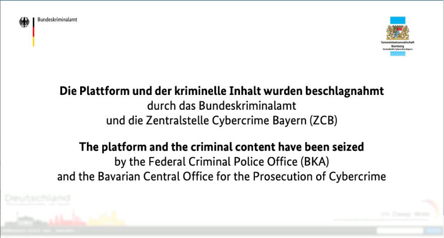
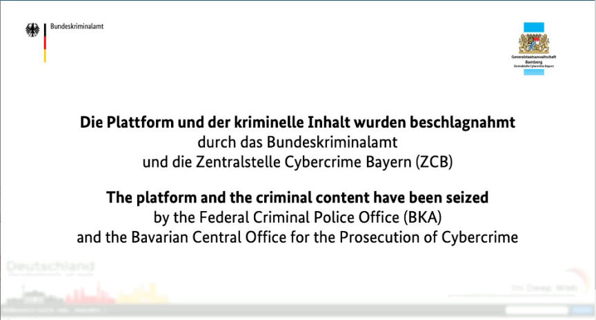

The Administrator of DiDW 3 Charged
~2 min read | Published on 2023-08-03, tagged Darkweb-Market, Forums, Indicted, admin using 348 words.
Authorities in Bavaria, Germany, filed charges at the Bamberg district court against a 23-year-old computer science student for operating the third version of the German darknet forum-cum-market, “Deutschland im Deep Web" (DiDW).

The prosecution accuses the defendant of running DiDW 3 from November 2018 to March 2022, under the moniker "Sudo." The site had approximately 16,000 members. Only 72 members actively traded through the platform.
The 23-year-old has been in detention since his arrest on October 25, 2022. The BKA claimed the defendant's arrest resulted from "months of undercover and technically demanding investigations."
In addition to the operation of DiDW 3, the investigators established that the defendant was involved in an online drug trafficking operation. The defendant had allegedly agreed to create a dark web drugs shop for a duo convicted of drug trafficking. In exchange for creating the shop, the defendant would receive a commission of 4% on sales made through the shop, in addition to the payment he would receive for developing it.
While developing the darknet shop, the defendant created and administered a drugs shop on the clearnet through which his accomplices distributed the drugs. The investigators believe the trio distributed a total of 3.4 kilograms of ketamine, 1.6 kilograms of MDMA, over 17,000 ecstasy pills, and more than 7,000 LSD blots through the clearnet shop. The creation of the darknet vendor shop was brought to an end by the arrest of one of the defendant's accomplices.
The defendant faces a minimum of five years in prison for drug trafficking offenses. For the charge of operating a criminal trading platform on the internet, he faces a prison sentence of 1 to 10 years.
The administrator of the original DiDW was sentenced to six years in prison in 2018. He had operated the forum from 2013 to 2017 when it was shut down by the BKA. He was charged with facilitating the 2016 shooting spree in Munich that left 10 people dead. The shooter had allegedly acquired the gun used in the shooting from a vendor on the forum.

Seizure Banner placed at Deutschland im Deep Web's Homepage
The prosecution accuses the defendant of running DiDW 3 from November 2018 to March 2022, under the moniker "Sudo." The site had approximately 16,000 members. Only 72 members actively traded through the platform.
The 23-year-old has been in detention since his arrest on October 25, 2022. The BKA claimed the defendant's arrest resulted from "months of undercover and technically demanding investigations."
In addition to the operation of DiDW 3, the investigators established that the defendant was involved in an online drug trafficking operation. The defendant had allegedly agreed to create a dark web drugs shop for a duo convicted of drug trafficking. In exchange for creating the shop, the defendant would receive a commission of 4% on sales made through the shop, in addition to the payment he would receive for developing it.
While developing the darknet shop, the defendant created and administered a drugs shop on the clearnet through which his accomplices distributed the drugs. The investigators believe the trio distributed a total of 3.4 kilograms of ketamine, 1.6 kilograms of MDMA, over 17,000 ecstasy pills, and more than 7,000 LSD blots through the clearnet shop. The creation of the darknet vendor shop was brought to an end by the arrest of one of the defendant's accomplices.
The defendant faces a minimum of five years in prison for drug trafficking offenses. For the charge of operating a criminal trading platform on the internet, he faces a prison sentence of 1 to 10 years.
The administrator of the original DiDW was sentenced to six years in prison in 2018. He had operated the forum from 2013 to 2017 when it was shut down by the BKA. He was charged with facilitating the 2016 shooting spree in Munich that left 10 people dead. The shooter had allegedly acquired the gun used in the shooting from a vendor on the forum.